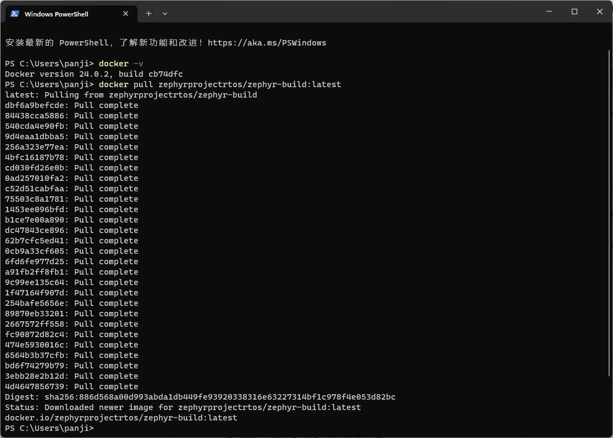
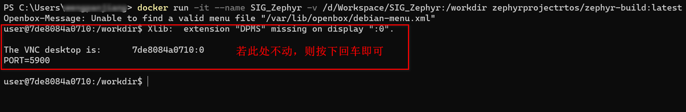
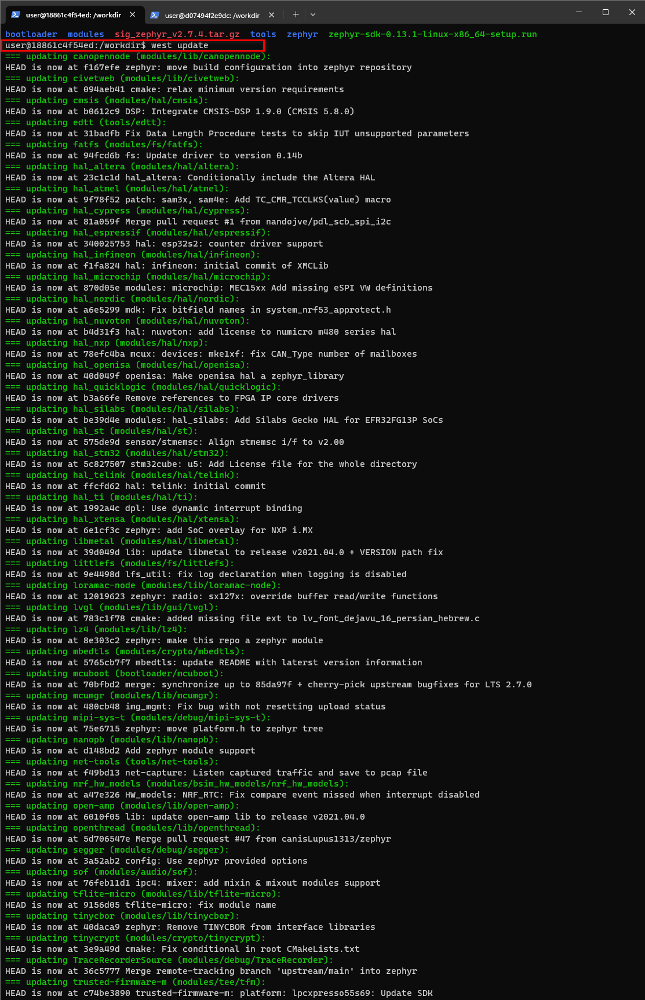
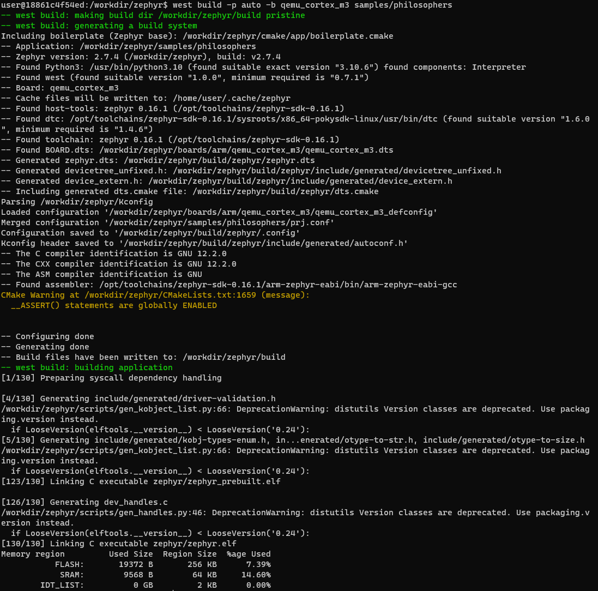
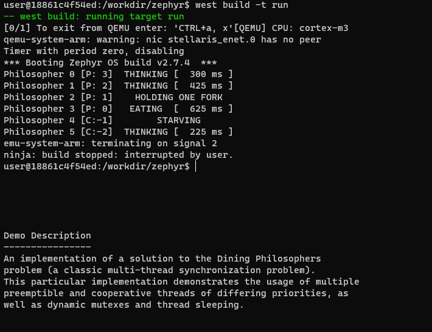

Windows下基于Docker Desktop开发环境的搭建¶
本章主要介绍一种基于Windows平台，使用Docker Desktop搭建的开发环境，该开发环境搭建更为简单、便捷。为国内开发者提供另一种开发环境搭建方案的选择。 该方案的思路是在windows平台下安装docker desktop，然后拉取Zephyr Project官方的image，基于该image创建容器，随后进入容器完成开发文件的布局后， 即可开始正式的编译和开发。其实思路和在windows下创建linux虚拟机进行开发是一样的，只不过使用docker来进行部署会相比虚拟机更加轻便，容易，简单。
准备阶段¶
该部分主要准备本方案中所使用到的工具、文件等，便于后续正式部署时使用。
Dokcer Desktop¶
下载安装Docker Desktop¶
通过链接下载对应系统架构的Docker Desktop V4.18.0. 并进行安装。 下载链接
配置Docker Dektop¶
配置Docker Dektop主要有两个操作。
修改image存储位置。
因为image默认是存放在C盘，避免C盘占用过多，所以将image存储位置进行修改。
参考链接 【Docker】win10上修改docker的镜像文件存储位置（九）- 通过WSL2修改
修改image源。
因为Docker Dektop的默认源部署在海外，访问不稳定，所以对源进行修改，加速访问。
参考链接 Windows Docker 配置国内镜像源的两种方法
以上配置在参考链接中均有检查环境，请自行参考链接进行检查。
拉取Zephyr-build image¶
备注
Desktop Hub类似于github，是Desktop官方专门给用户存放公共imgae的地方。其操作逻辑和在github拉取代码、推送代码是一样的。
在Windows终端输入以下命令，从Desktop Hub拉取拉取zephyr-build image
docker pull zephyrprojectrtos/zephyr-build:latest
下载完成后的页面如下图所示。

使用命令查看已经下载好的image，可以看到有一个zephyrprojectrtos/zephyr-build的image
PS C:\Users\panji> docker images
REPOSITORY TAG IMAGE ID CREATED SIZE
zephyrprojectrtos/zephyr-build latest de8729afe80c 3 weeks ago 12.1GB
创建并进入容器¶
创建并启动容器，并将本地的目录D:/Workspace/SIG_Zephyr挂在到容器的/workdir中。
备注
此处进行文件夹的挂载主要是为了方便在windows下直接访问容器类的文件夹，类似与linux服务和windows使用samba进行文件文件传输。 参考链接 docker挂载Win10本地目录
PS C:\Users\panji> docker images
docker run -it --name SIG_Zephyr -v /d/Workspace/SIG_Zephyr:/workdir zephyrprojectrtos/zephyr-build:latest
命令运行后如下图所示。

容器中部署Zephyr¶
将sig_zephyr_v2.7.4.tar.gz和zephyr-sdk-0.13.1-linux-x86_64-setup.run放在D:/Workspace/SIG_Zephyr文件中，此时可以在容器中对应挂载的文件也能看到该文件.
user@18861c4f54ed:/workdir$ ls
sig_zephyr_v2.7.4.tat.gz zephyr-sdk-0.13.1-linux-x86_64-setup.run
解压sig_zephyr_v2.7.4.tar.gz到/wordir文件夹
警告
因为分享链接下载的exe文件，双击就能够解压出sig_zephyr_v2.7.4.tar.gz文件。
user@18861c4f54ed:/workdir$ tar -xvzf sig_zephyr_v2.7.4.tar.gz
user@18861c4f54ed:/workdir$ ls -a
. .. bootloader modules sig_zephyr_v2.7.4.tar.gz tools .west zephyr zephyr-sdk-0.13.1-linux-x86_64-setup.run
使用ls -a可以看到在workdir文件夹中多了几个个文件夹.west、bootloader、modules、tools、zephyr，这5个文件夹即是整个zephyr 的项目文件夹。
在workdir文件夹中运行west update。
west update
备注
此步骤可以省略，不过可以用来检验整个zephyr 项目文件夹是否建立正常。
命令运行后如下图所示。

安装SDK
此步骤完全参考zephyr官方文档进行操作。详情查看 Getting Started Guide 中的Install a Toolchain章节，可以跳过Download the latest SDK installer步骤。
编译及运行¶
上述所有准备工作完成之后，可以尝试构建Zephyr应用了。
编译¶
先进入到zephyr目录下，再进行编译。
user@18861c4f54ed:/workdir/zephyr$ cd zephyr
user@18861c4f54ed:/workdir/zephyr$ west build -p auto -b qemu_cortex_m3 samples/philosophers
编译如下图所示：

运行¶
使用命令对上述编译进行仿真运行。
user@18861c4f54ed:/workdir/zephyr$ west build -t run
运行结果如下图所示。

运行后可以看到终端有字符一直再变动，其实这是qemu在对例程进行运行，ctrl+c可以中止例程运行。
Docker相关操作¶
如何退出Docker容器？
容器中输入exit即可退出容器；
容器停止运行后如何启动和进入？
启动容器命令：docker start 容器名 进入容器命令：docker attach 容器名
vscode如何访问Docker容器？
安装Docker插件，找到对应的容器访问即可。
备注
若对Docker相关操作不熟悉，请先花时间阅读准备阶段的Docker学习链接，熟悉相关操作。
参考文档¶
以下文档均在本文相关操作中提供过帮助。